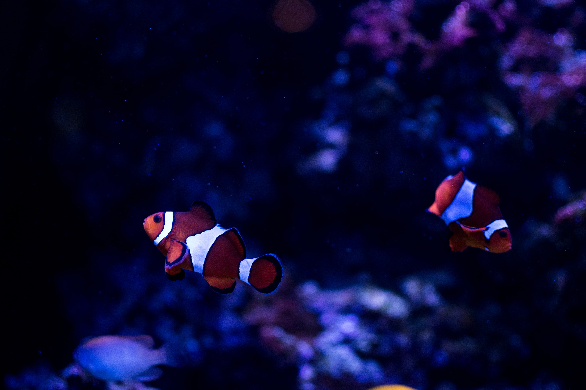
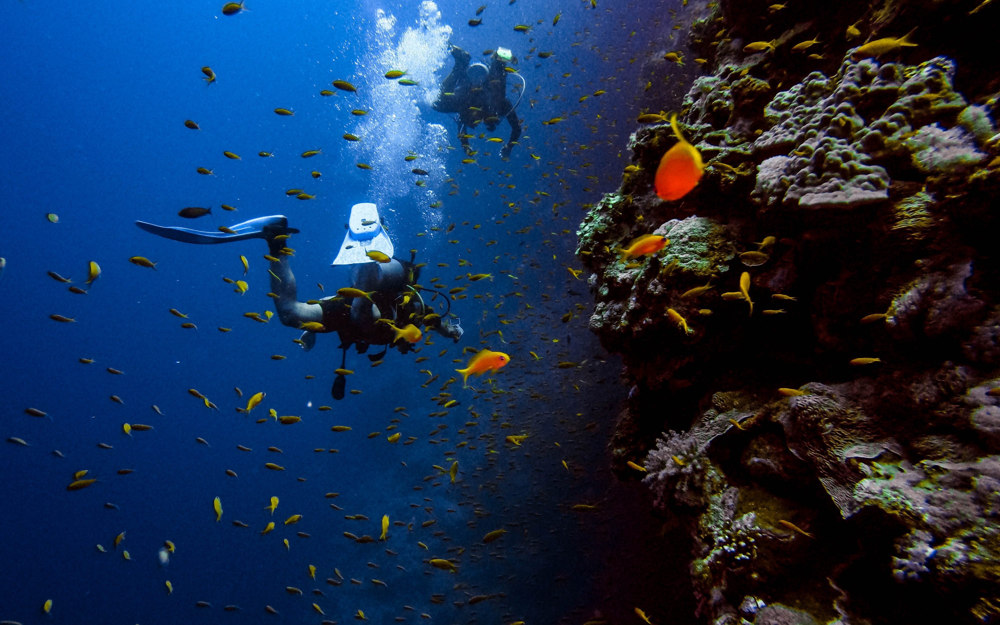

Services / Offshore Diving Services Offshore diving is the most well known branch of commercial diving The work in this area of the industry typically revolves around the maintenance of oil platforms, building of underwater structures used in the production process, installation, NDT survey, UWILD survey, inspection & survey with CCTV, general inspection, etc. SDSPL has workforce to work in & with all types of SURFACE SUPPLIED / AIR / MIXED GAS and SATURATION DIVING systems & equipment.
Underwater Inspection, Maintenance & Repairs of Offshore structures. Pre-engineering surveys. UWILD surveys. Diving Support for Pipe laying, Diffuser & Umbilical Installation. Underwater NDT Inspection using MPI, CP and UT devices. Underwater Inspection using Underwater Still Photography and Video Photography (CCTV). Offshore Diving Services
Installation & Replacement of Jacket, Pipelines, Risers, Clamps, Conductors and Anodes. Installation, Preservation & Maintenance of Offshore Oil Terminals, S.B.M and S.P.M. Experts & Engineers for handling Anchor Mooring systems. Underwater cleaning of marine growth using hydro pressure jets. Underwater inspection, maintenance & repairs of ships and all types of sea going vessels. Hull & Propeller cleaning & polishing. Blanking of sea suction grating. Underwater repairs to any Structural Damage.
Underwater diving, as a human activity, is the practice of descending below the water's surface to interact with the environment. Immersion in water and exposure to high ambient pressure have physiological effects that limit the depths and duration possible in ambient pressure diving. Humans are not physiologically and anatomically well adapted to the environmental conditions of diving, and various equipment has been developed to extend the depth and duration of human dives, and allow different types of work to be done.
In ambient pressure diving, the diver is directly exposed to the pressure of the surrounding water. The ambient pressure diver may dive on breath-hold, or use breathing apparatus for scuba diving or surface-supplied diving, and the saturation diving technique reduces the risk of decompression sickness (DCS) after long-duration deep dives. Atmospheric diving suits (ADS) may be used to isolate the diver from high ambient pressure. Crewed submersibles can extend depth range, and remotely controlled or robotic machines can reduce risk to humans.